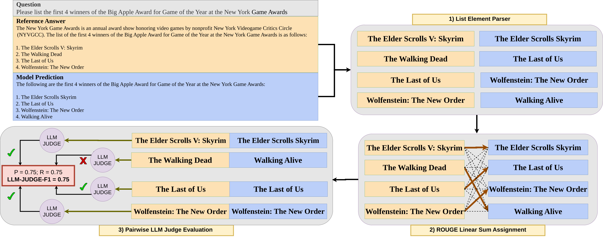

SimpleListQAsingle-faceted · flat list
Who were the actresses selected for Best Actress nominations at the 8th Academy Awards?
- Bette Davis
- Elisabeth Bergner
- Claudette Colbert
- Katharine Hepburn
- Miriam Hopkins
- Merle Oberon
A Benchmark for Evaluating List-Formatted Factual Knowledge Retrieval in Large Language Models
Amazon AGI
Many real information needs have not one correct answer but an entire set: a traveler asks which direct routes an airline launched since 2022, and a researcher asks which countries ratified a treaty before a given year. The user needs the complete set of qualifying facts, without fabricated additions, organized with the requested attributes. ListQA has two subsets: SimpleListQA (flat lists) and ComplexListQA (hierarchical lists with sub-attributes).
Who were the actresses selected for Best Actress nominations at the 8th Academy Awards?
List the songs and years in which Bruce Springsteen won the Grammy Award for Best Rock Song between 2000 and 2024.
Many real-world questions demand not a single fact but an organized collection of them, yet existing factual knowledge benchmarks almost exclusively target single-answer retrieval. We introduce ListQA, a benchmark of 9,045 human-curated, cross-validated questions (audited error rate of 1.7%) that require LLMs to recall multiple facts and compose them into structured lists of 3–10 elements. Questions range from flat lists (“Which NCAA teams went undefeated between 2000 and 2024?”) to hierarchical lists with sub-attributes (“…and what was their record and result?”), spanning eight categories across 60+ countries. An evergreen design (explicit temporal constraints or historically immutable facts) keeps ground truth valid without periodic updates. For evaluation, we frame element matching as a linear sum assignment problem: optimal bipartite matching paired with LLM-based semantic grading jointly captures factual accuracy, hallucination, and format compliance. We benchmark 34 models (8 families, 42 configurations across standard and thinking-enabled inference) and find: the best standard-inference model scores below 37% LLM-Judge-F1, multi-faceted questions are harder across the board, and providing the source Wikipedia page lifts scores dramatically, confirming that models can organize facts but struggle to retrieve them from parameters alone. Extended analyses cover base vs. instruction-tuned checkpoints and token efficiency.
To our knowledge, ListQA is the first benchmark that requires multi-element retrieval, structured output, and joint evaluation of knowledge and instruction following, all at once.
Every reference answer is a list of 3 to 8 elements. Models are scored on how completely they recall the qualifying facts and how well they avoid adding fabricated ones.
SimpleListQA needs flat lists. ComplexListQA needs hierarchical lists with sub-attributes (e.g. recipient, result). Models must pick the right structure for each question.
Each question has an explicit time window (e.g. “from 2000 to 2024”) or targets facts that cannot change, so the gold lists stay valid without periodic updates. Answers are validated as of December 31, 2024.
Every question comes from a Wikipedia table and ships with its source URL, category, time range, question type, and ordering flag.
| Benchmark | ME | SO | EG | K+IF |
|---|---|---|---|---|
| Single-answer factual QA | ||||
| TriviaQA | ✕ | ✕ | ✕ | ✕ |
| Natural Questions | ✕ | ✕ | ✕ | ✕ |
| PopQA | ✕ | ✕ | ✕ | ✕ |
| SimpleQA | ✕ | ✕ | ✓ | ✕ |
| FACT-Bench | ✕ | ✕ | ✕ | ✕ |
| Multi-answer factual QA | ||||
| QAMPARI | ✓ | ✕ | ✕ | ✕ |
| RoMQA | ✓ | ✕ | ✕ | ✕ |
| Multi-hop & reasoning QA | ||||
| HotpotQA | ✕ | ✕ | ✕ | ✕ |
| MuSiQue | ✕ | ✕ | ✕ | ✕ |
| GPQA | ✕ | ✕ | ✕ | ✕ |
| Benchmark | ME | SO | EG | K+IF |
|---|---|---|---|---|
| Structured & table QA | ||||
| WikiTableQuestions | ◐ | ✕ | ✕ | ✕ |
| HybridQA | ✕ | ✕ | ✕ | ✕ |
| Temporal & dynamic | ||||
| FreshQA | ✕ | ✕ | ◐ | ✕ |
| RecencyQA | ✕ | ✕ | ◐ | ✕ |
| Long-form factuality | ||||
| FActScore | ◐ | ✕ | ✕ | ✕ |
| FACTS Grounding | ◐ | ✕ | ✕ | ✓ |
| Knowledge calibration | ||||
| SelfAware | ✕ | ✕ | ✕ | ✕ |
| ListQA (ours) | ✓ | ✓ | ✓ | ✓ |
supported · partial · not supported · ME multi-element retrieval, SO structured output, EG evergreen design, K+IF knowledge + instruction following.
The full dataset contains 9,045 question–answer pairs sourced from 3,765 unique Wikipedia tables. Each sample comes with metadata: the source Wikipedia URL, topical category, temporal range, question type, and ordering requirement. That makes the ground truth independently checkable and supports fine-grained analysis along any of these dimensions.
| Questions | 9,045 |
| SimpleListQA / ComplexListQA | 59.5% / 40.5% |
| Unique Wikipedia source tables | 3,765 |
| Elements per answer (median / mean) | 3–8 (4 / 4.65) |
| Sub-attributes per element (Complex) | 1–8 |
| Year-constrained / timeless | 70.1% / 29.9% |
| Ordered / unordered | 14.6% / 85.4% |
| Countries represented | 60+ (6 continents) |
Two pilot rounds calibrated how annotators understood the task. Pilot data is not in the final dataset.
Each QA pair was written by one of 44 annotators and independently checked by a second annotator who had no part in writing it (100% coverage).
Validators flagged issues using a fixed error taxonomy. Samples that needed major rework were discarded (10%). The rest were corrected.
At least one more reviewer checked every correction, and two reviewers checked 20% of them.
Judging a predicted list as a whole correlates poorly with human evaluation. Instead, ListQA grades each predicted element against its reference counterpart with an LLM judge. To keep that affordable, element matching is framed as a linear sum assignment problem, which cuts the number of judge calls from O(n²) to O(n).

The LLM judge grades each matched pair independently as CORRECT or INCORRECT. Predicted elements left unmatched count as INCORRECT. Precision and recall are computed over the elements judged CORRECT.
The headline factual metric. It uses the parse → assign → judge pipeline above, and precision and recall are computed over elements the judge marks CORRECT. Only content inside the prescribed list structure earns credit.
Checks list structure only, not facts. Single-faceted questions need a flat list and multi-faceted questions need sub-bullets. It is the fraction of correctly structured elements, and 0 if fewer than 3 elements are produced.
The fraction of reference elements (and sub-element values) found by string matching anywhere in the raw model output, whether or not that output is formatted as a list.
The fraction of predicted list elements whose content matches the reference by string matching. It penalizes fabricated extras.
The same optimal assignment, scored by ROUGE-1 overlap (a pair counts as matched at ≥ 0.5). A cheaper but less discriminative proxy for LLM-Judge-F1.
For the 1,319 questions (14.6%) that need a specific order. Elements are paired by position instead of by optimal assignment, then judged, so correct elements in the wrong place are penalized.
Filter by subset, category, region, country, time window, list length, or ordering, and search the question text or the reference answers.
If you use ListQA in your research, please cite:
@inproceedings{kulkarni2026listqa,
title = {ListQA: A Benchmark for Evaluating List-Formatted Factual Knowledge Retrieval in Large Language Models},
author = {Kulkarni, Mayank and Vaideeswaran, Rakesh},
booktitle = {Advances in Neural Information Processing Systems (NeurIPS), Evaluations and Datasets Track},
year = {2026}
}